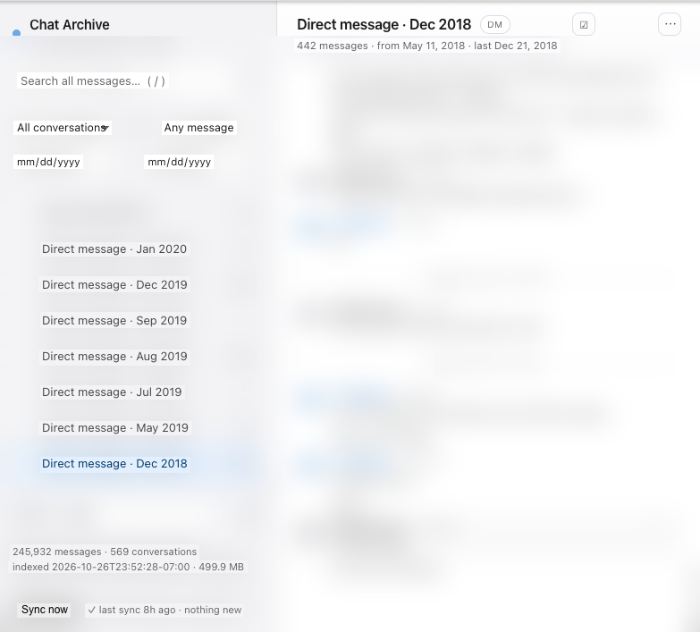

Export and search your Google Chat history, offline
Every space, group chat and DM in a local SQLite archive with instant full-text search — including messages that Google Takeout refuses to export.
pipx install "gchat-archive[text]"
gchat-archive serve
Google Chat has no export button. Takeout is not the answer.
Google's own help centre is explicit: with Takeout, "group messages and spaces created by users with a work or school account won't export as part of your Chat history." Those are the conversations you actually need to keep. And what Takeout does give you is a zip of JSON — openable, but not searchable.
gchat-archive reads the Google Chat API directly, with your own OAuth client, so it sees every space you are a member of — work accounts included — and keeps it queryable.
What you get
Every message
Incremental sync that resumes where it stopped, across accounts.
Full-text search
Messages, sender names, and the text inside PDFs, DOCX, XLSX, CSVs and Google Docs.
Works offline
A local web UI on 127.0.0.1: no internet needed to read your own history.
Nightly sync
A scheduled job keeps the archive current, or run it by hand from the UI.
Backup & restore
One .tar.gz moves the whole archive — messages, accounts, settings — to a new machine.
Nothing leaves your machine
No server, no telemetry, no account. Optional password on the UI.
Multi-account
Personal and work Google accounts, each with its own isolated archive.
Prune locally
Hide or delete conversations from your copy. Google Chat itself is never modified.
How it works
- Install —
pipx install "gchat-archive[text]"on macOS, Windows or Linux (Python 3.10+). - Create an OAuth client — five minutes in Google Cloud Console; the setup page walks you through it and accepts the
client_secret.jsonby drag and drop. - Sign in and sync — the first sync pulls your whole history, later ones only fetch what is new.
Questions
How do I export my Google Chat history?
Install gchat-archive, upload an OAuth client on the setup page, sign in, and run a sync. You get a SQLite database plus a browsable UI. For a personal account Google Takeout also works; for work and school accounts it does not export spaces at all.
Does Google Takeout include work or school Chat spaces?
No. Google documents that group messages and spaces created by work or school accounts are excluded from the export. gchat-archive uses the Chat API instead, so those spaces are included.
Can I search my Google Chat history offline?
Yes. Messages are indexed with SQLite FTS5, so search is local and instant — including the text inside attached documents. No internet connection is needed to read the archive.
Where is the archive stored, and is it private?
Under your home directory (~/.gchat-archive), readable only by you. The web UI
listens on 127.0.0.1 and nothing is uploaded anywhere.
Can I use more than one Google account?
Yes — add each account in Settings; every account gets its own isolated archive and you can search across all of them at once.
Can I move the archive to another computer?
Yes. Export a backup from Settings and restore it on the new machine; accounts, settings and the database come with it.
Does it delete anything from Google Chat?
No. Excluding or deleting a conversation affects only your local copy. The app never calls a write endpoint on Google Chat.
What does it cost?
Nothing. MIT licensed, source on GitHub.